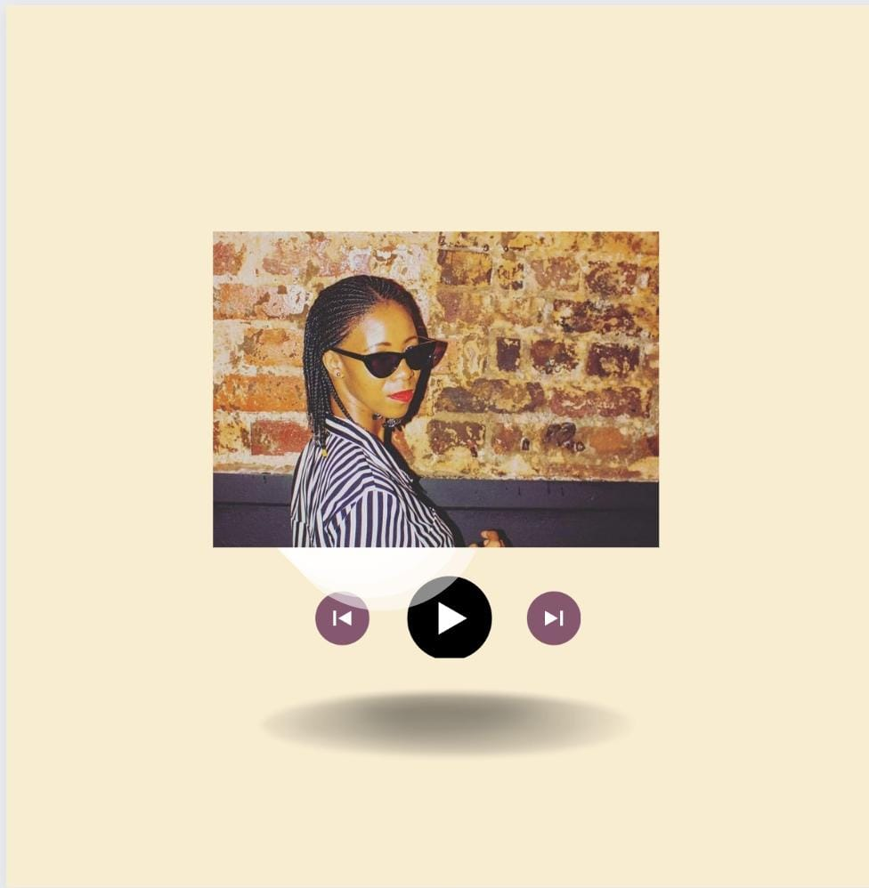

Mahlatse KeNosi Sarathi
I am a very bubbly individual who is full of life and loves flowers. Born in the year 1995 on the 6th February,
originally from The Vaal Triangle but relocated to Soweto for better opportunities 4 years ago.
I always had an interest in Radio Broadcasting, Public Relations and
Communication Science, the Digital Space as
well as Digital Technology.
I matriculated in the year 2014 at The Vaal High School, which is the year that I can never
forget because my mother passed on the day
when I was writing my final matric exam paper. In the year 2015 after collecting
my matric statement, I always dreamed of studying at Boston Media House.
I tried to pursue a college Diploma in Radio
Broadcasting at Boston Media House but dropped out of College due to lack of funds in 2016, then I had to stay at home for a year.
In 2017 I registered with UNISA for a Diploma in Public Relations which took me 4 years to complete instead of 3 years because
I had challenging issues at home. I then graduated in the 2021, which I am very proud of because it shows that my
main focus is obtaining good results even under underlining circumstances, simply because I enjoy taking charge and
love a great challenge! Although I can be quite competitive and with incredible will power, I am determined to achieve my goals.
|

|